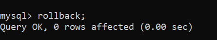
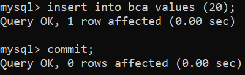
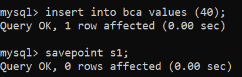

our bca practical is here
here you can see our programming

our bca practical is here
here you can see our programming
TRANSACTION CONTROL LANGUAGE
TCL stands for Transaction Control Languages. These commands are used for maintaining consistency of the database and for the management
of transactions made by the DML commands.
A Transaction is a set of SQL statements that are executed on the data stored in DBMS. Whenever any transaction is made these transactions are
temporarily happen in database.So to make the changes permanent, we use TCL commands.
The TCL commands are:
1. ROLLBACK
2. COMMIT
3. SAVEPOINT

This command is used to get the data or restore the data to the last savepoint or last committed state. If due to some reasons the data
inserted, deleted or updated is not correct, you can rollback the data to a particular savepoint or if savepoint is not done, then to the
last committed state.
Syntax:
rollback;
Here is the example:-

This command is used to save the data permanently.
Whenever we perform any of the DML command like -INSERT, DELETE or UPDATE, these can be rollback if the data is not stored permanently.
So in order to be at the safer side COMMIT command is used.
Syntax:
commit;

This command is used to save the data at a particular point temporarily, so that whenever needed can be rollback to that particular point.
The syntax for writing an savepoint statement is as follows :
savepoint s1;
